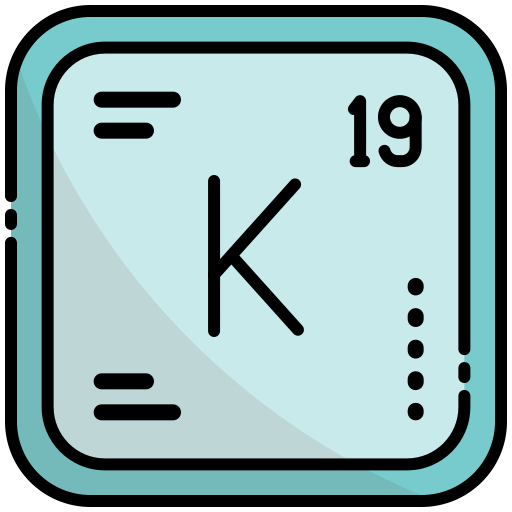

Weather Forecast
Dashboard
No Production Started
Real-Time NPK Sensor
120
Nitrogen (N)
80
Phosphorus (P)

60
Potassium (K)
Real-Time Soil Moisture
120
Soil Moisture
Soil Nutrient Monitoring (N, P, K)
Updates
Warning!
Are you really sure you want to delete the logs?
Action cannot be undone.